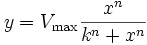
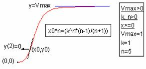

Contents |

Hill function.
Reference: Seber, G. A. F., Wild, C. J. 1989. Nonlinear Regression. John Wiley & Sons, Inc. p. 120

Number: 3
Names: Vmax, k, n
Meanings: Vmax = unknown, k = unknown, n = unknown
Lower Bounds: Vmax > 0, k>0, n>0
Upper Bounds: none
nlf_hill(x,Vmax,k,n)
FITFUNC\HILL.FDF
Electrophysiology, Growth/Sigmoidal